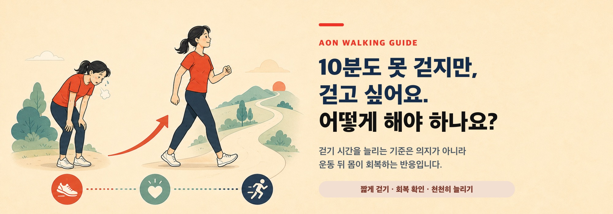
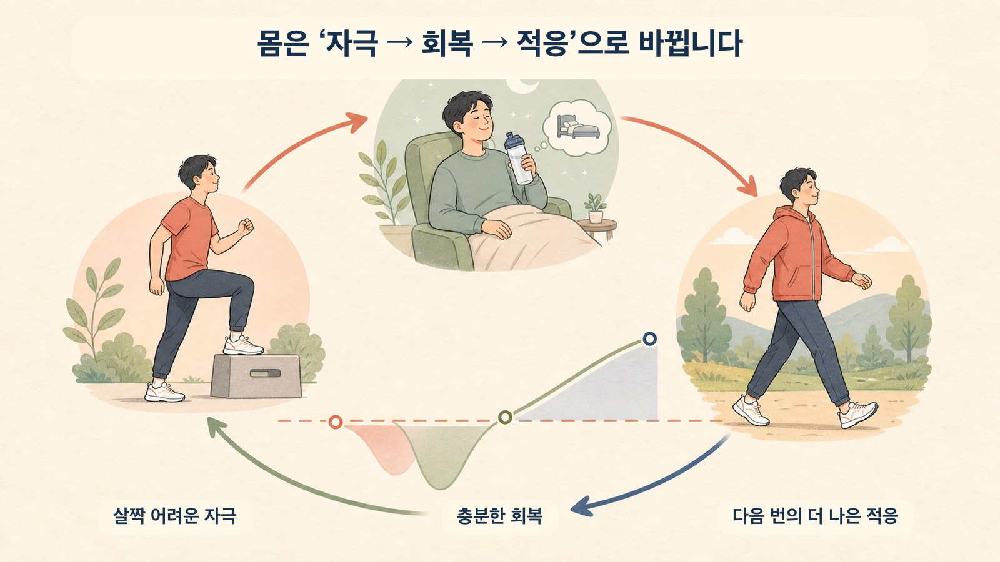
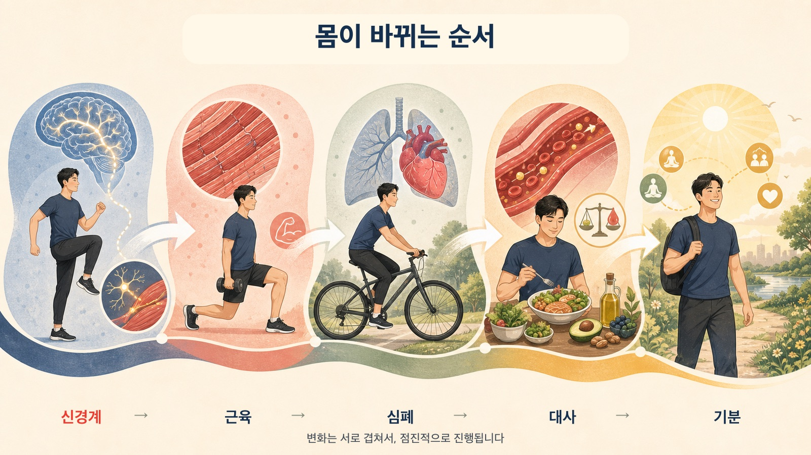
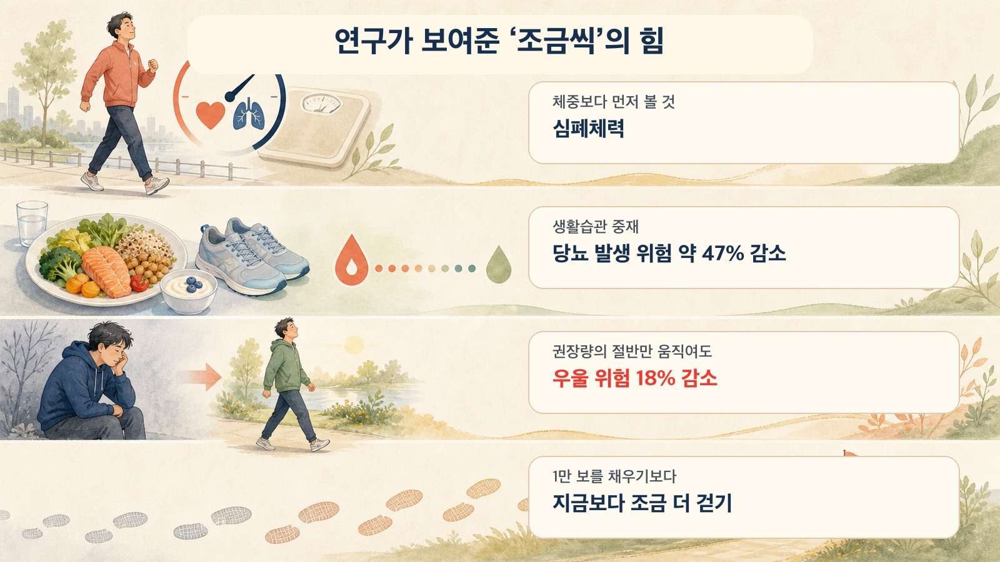
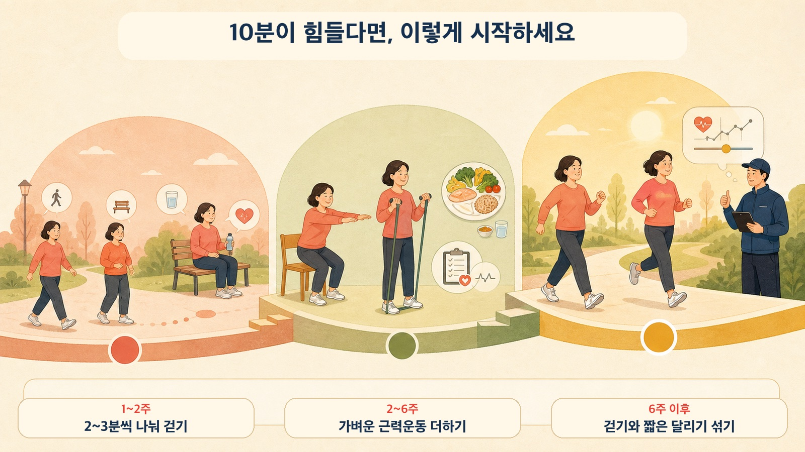

가칭 K씨는 오랜만에 받은 건강검진에서 혈압과 콜레스테롤, 당뇨 전단계 위험을 관리해야 한다는 이야기를 들었습니다. 걱정이 되어 밖으로 나갔지만 10분만 걸어도 허리가 아파 멈췄고, 1분만 뛰어도 숨이 찼습니다.
운동 후에는 허기가 몰려왔고, 치킨과 피자를 주문한 뒤에는 다시 패배감이 찾아왔습니다. 무엇부터 시작해야 할지 모르는 K씨는 에이온에서 묻습니다.
이 글은 그 질문에 답합니다. 한꺼번에 모든 것을 바꾸는 대신 몸이 적응하는 순서에 맞춰 약, 식습관과 운동을 어떻게 쌓아갈지 살펴보겠습니다.
회복의 엔진은 자극, 회복, 적응입니다

몸은 현재 감당하는 수준보다 살짝 높은 자극을 받고, 회복할 시간을 가진 뒤 다음에는 그만큼을 더 잘 견디도록 변합니다.
부하가 너무 낮으면 적응 신호가 부족하고, 너무 크면 회복이 따라가지 못합니다. 디컨디셔닝된 몸은 역치가 낮아져 있기 때문에 다른 사람에게 가벼운 운동도 큰 과부하가 될 수 있습니다.
중요한 것은 독하게 버티는 것이 아니라 현재 이 사람의 역치를 찾는 것입니다.
몸의 변화는 한꺼번에 일어나지 않습니다

먼저 신경계가 배웁니다
운동을 시작한 첫 몇 주에는 근육이 눈에 띄게 굵어지기 전에 힘이 먼저 늘 수 있습니다. 운동단위 동원과 발화율을 포함한 신경 적응을 통해 이미 가지고 있는 근육을 더 잘 쓰게 되기 때문입니다.
눈에 보이는 변화가 적더라도 기능 변화는 이미 시작될 수 있습니다.
그다음 근육과 심폐체력이 따라옵니다
반복적인 근력운동은 시간이 지나며 구조적인 근비대를 만들고, 걷기와 자전거 같은 유산소활동은 더 오래 움직일 수 있는 심폐체력을 준비합니다.
약 39만 명의 자료를 종합한 연구에서는 심폐체력이 좋은 과체중·비만군의 사망 위험이 정상체중이면서 체력이 좋은 군과 통계적으로 다르지 않았고, 체력이 낮은 집단은 체중과 관계없이 더 높은 위험을 보였습니다.
따라서 K씨의 첫 목표는 체중계 숫자만이 아니라 덜 숨차고 더 오래 움직이는 능력이어야 합니다.
대사와 기분도 함께 바뀝니다
내당능장애 성인을 대상으로 한 생활습관 중재 연구들을 종합하면 식사와 신체활동을 포함한 중재는 제2형 당뇨 발생의 상대위험을 약 47% 낮췄습니다.
신체활동과 우울 위험을 살펴본 메타분석에서는 권장 운동량의 절반 수준에서도 우울 위험이 18% 낮았고, 전혀 움직이지 않던 사람이 조금이라도 시작할 때 이득이 크게 나타났습니다.
운동은 정신건강 치료를 대신하지 않지만 작은 활동은 다시 움직일 동력을 만드는 데 도움을 줄 수 있습니다.
1만 보를 채워야만 의미가 있을까요?

15개 코호트, 약 4만7천 명을 분석한 연구에서는 가장 적게 걷는 집단에서 한 단계만 올라가도 사망 위험이 크게 낮아졌습니다. 이득은 60세 이상에서 하루 6,000-8,000보, 60세 미만에서 8,000-10,000보 부근부터 완만해졌습니다.
처음부터 1만 보를 채우는 것이 핵심이 아닙니다. 지금보다 조금 더 걷는 것이 가장 중요한 첫걸음입니다.
약, 음식과 운동은 함께 갑니다
약이 필요하다면 의사와 상의해 사용합니다. 약만으로 근육과 기능이 자동으로 보존되는 것은 아니므로 가능한 범위에서 근력운동을 함께 준비합니다.
식사는 배달음식을 하루아침에 금지하기보다 빈도를 조금씩 줄이고, 단백질과 채소가 포함된 식사를 한 끼씩 늘리는 방식으로 바꿉니다.
의지가 떨어진 날에는 “30분 운동 실패” 대신 “오늘 2분 걷기 성공”을 기록합니다. 작은 성공이 다음 노출을 가능하게 합니다.
단계별로 이렇게 시작하세요

1-2주
10분이 힘들면 2-3분씩 나누어 여러 번 걷습니다. 통증이나 숨참이 급격히 올라가지 않고 다음 날 회복할 수 있는 범위를 찾습니다.
2-6주
가벼운 근력운동을 더하고 걷는 시간을 조금씩 늘립니다. 식사도 한 끼씩 바꿉니다. 시간, 속도, 경사와 빈도를 동시에 올리지 않습니다.
6주 이후
걷기 양과 강도를 천천히 올린 뒤 걷기와 뛰기를 번갈아 시행합니다. 한 번에 하나의 요소만 늘리고 당일뿐 아니라 다음 날 반응을 확인합니다.
심혈관질환, 혈당 문제 또는 새로운 신경학적 증상이 있다면 시작 전에 의료진과 상의해야 합니다.
몸은 분명히 적응합니다. 조금씩, 그러나 확실하게요.
※ 이 글은 일반적인 건강정보이며 개인의 진단이나 치료를 대신하지 않습니다.
참고한 주요 연구
- Kokkinos P, et al. Cardiorespiratory fitness, body mass index and mortality. 2025. https://pubmed.ncbi.nlm.nih.gov/39537313/
- Haw JS, et al. Long-term sustainability of diabetes prevention approaches. 2017/2019 review. https://pubmed.ncbi.nlm.nih.gov/31683759/
- Pearce M, et al. Association between physical activity and risk of depression. 2022. https://jamanetwork.com/journals/jamapsychiatry/fullarticle/2790780
- Paluch AE, et al. Daily steps and all-cause mortality. 2022. https://pmc.ncbi.nlm.nih.gov/articles/PMC9289978/
에이온 센터 이야기: https://blog.naver.com/aon_physio/223946815713
에이온 상담·이용 안내: https://blog.naver.com/aon_physio/223946817857
#송파피티 #송파재활 #걷기운동 #달리기시작 #심폐체력 #당뇨전단계 #디컨디셔닝 #점진적과부하 #에이온재활운동센터